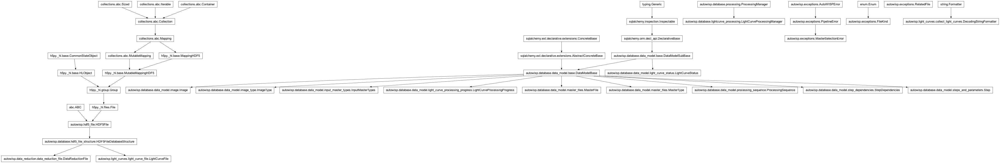
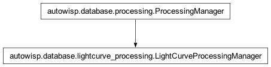

autowisp.database.lightcurve_processing module
Class Inheritance Diagram

Define a class that automates the processing of light curves.
- class autowisp.database.lightcurve_processing.LightCurveProcessingManager(*args, **kwargs)[source]
Bases:
ProcessingManager
Utilities for automated processing of lightcurves.
- Attrs:
See ProcessingManager.
- _pending(dict): Keys are ‘EPD’ and ‘TFA’ and values are lists
of single photometric reference filenames for which the given detrending step is pending.
- __call__(limit_to_steps=None)[source]
Perform all the processing for the given steps (all if None).
- _check_ready(step, image_type, single_photref_fname, db_session)[source]
Check if the given type of images is ready to process with given step.
- Parameters:
step (Step) – The step to check for readiness.
image_type_id (int) – The ID of the type of image to check for readiness (the image type of the single photometric reference).
single_photref_fname (str) – The filename of the single photometric reference identifying light curve points to process.
db_session (Session) – The database session to use.
- Returns:
- Whether all requirements for the specified processing are
satisfied.
- Return type:
- _get_lc_fnames(*, step, db_sphotref, catalog_fname, lc_fname, db_session)[source]
Return the lightcurves to be processed by the current step.
- _mark_progress(which, status=1, final=True)[source]
Record that current step has finished processing given lightcurve(s).
- Returns:
None
- _prepare_processing(step_name, single_photref_fname, limit_to_steps)[source]
Prepare for processing images of given type by a calibration step.
- _progress_image_type(processing_progress, db_session)[source]
Derive the image type from the row’s single photref.
A lightcurve progress row has no image type of its own; when the step ran, its logs were keyed on the image type of the single photometric reference’s source frame (
_current_image_type). Reproduce that here so the log names match: the photref DR’sRAWFNAME-> theImage-> its type.
- _specialize_config(*, step, step_config, db_sphotref, catalog, db_session)[source]
Add parts of configuration for step that depend on database.
- _start_step(*, step, db_sphotref_image, sphotref_header, db_sphotref, db_session)[source]
Record start of processing and return the LCs and configuration to use.
- Parameters:
step (Step) – The database step to start.
db_sphotref_image (Image) – The Image database object corresponding to the single photometric reference for which processing is starting.
sphotref_header (dict-like) – The header of the single photometric reference.
db_sphotref (MasterFile) – The database MasterFile instance corresponding to the single photometric reference.
db_session – Session for querying the database.
- Returns:
List of the lightcurves to process
- dict:
The complete configuration to use for the specified processing.
- Return type:
[]
- get_step_config(*, step, db_sphotref, db_sphotref_image, sphotref_header, db_session)[source]
Return the configuration to use for the given step/sphotref combo.
- static select_step_sphotref(db_session, pending=True, full_objects=False)[source]
Return pening or non-pending step/single photref combinations.
- set_pending(db_session)[source]
Set the unprocessed images and channels split by step and image type.
- Parameters:
db_session (Session) – The database session to use.
- Returns:
- [str, …]}:
The filenames of the single photometric reference DR files for which lightcurves exist but the given steps has not been performend yet.
- Return type:
{step name